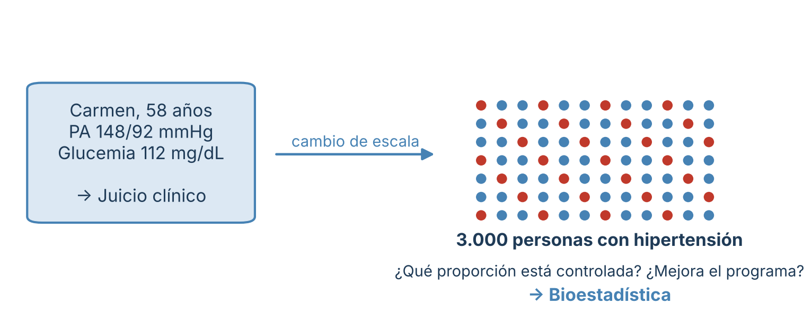
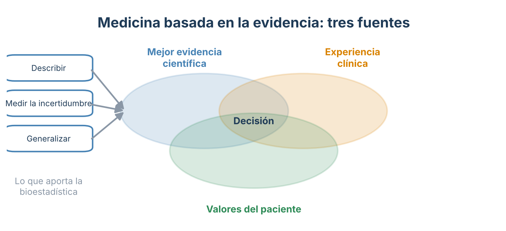
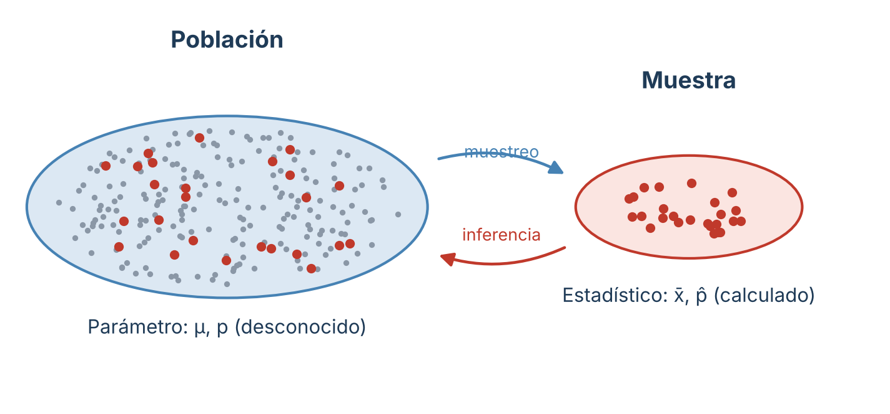
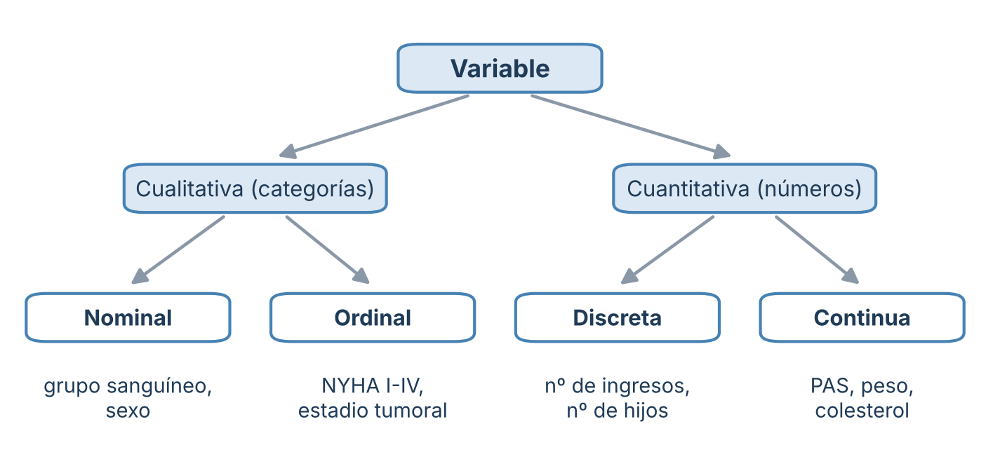
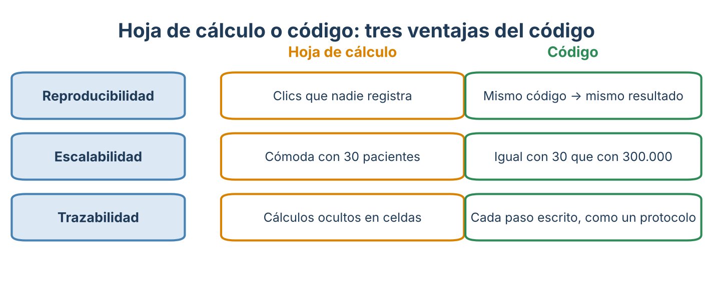
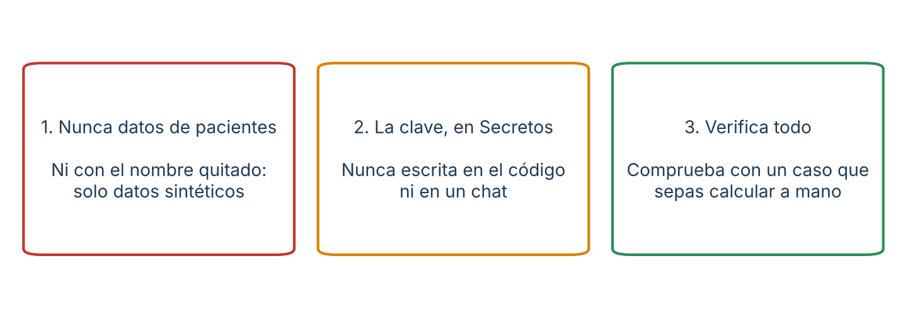
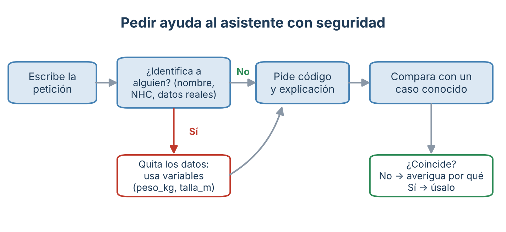

Bioestadística (1964) · Grado en Medicina · Curso 2027-2028
Tema 10Introducción a la bioestadística computacional en ciencias de la salud: entorno Google Colab y asistentes de inteligencia artificial
Módulo 1. Descubriendo Python
Fernando Borrás Rocher · Universidad Miguel Hernández de Elche · CC BY 4.0
Objetivos de aprendizaje
Al terminar esta sesión serás capaz de:
- Explicar qué aporta la bioestadística a la práctica clínica y a la medicina basada en la evidencia.
- Distinguir población, muestra, parámetro y estadístico en un problema clínico.
- Clasificar las variables clínicas según su tipo y su escala de medida.
- Identificar las principales fuentes de datos en ciencias de la salud.
- Ejecutar y documentar cálculos clínicos sencillos en un cuaderno de Colab.
- Usar un asistente de inteligencia artificial con seguridad: sin datos de pacientes, sin exponer la clave de acceso y verificando siempre su respuesta.
Cómo usar esta presentación
Usa el selector de arriba para dar el tema en una sesión completa o en dos sesiones intercaladas.
🎓 Sesión de clase magistral
- 1. Caso clínico de partida 5 min
- 2. Conceptos clave 10 min
- 6. Autoevaluación 5 min
Explica los conceptos, haz la pausa activa y cierra con las ideas clave.
💻 Sesión de Colab
- 3. Recorrido por el cuaderno 5 min
- 4. Demostración: cálculos clínicos en Python 15 min
- 5. Práctica en la app Bioestadística 10 min
- 6. Autoevaluación 5 min
Cada estudiante abre su copia del cuaderno, predice el resultado y después ejecuta la celda.
Teclas: ← → para pasar · N notas del profesor · M cambiar de modo · F pantalla completa · Esc índice.
1. Caso clínico de partida
De Carmen a 3.000 pacientes

- Con una paciente decide el juicio clínico: 148/92 mmHg es hipertensión.
- Con 3.000 pacientes las preguntas son otras: ¿qué proporción está controlada? ¿funciona el programa?
- Responderlas exige datos, estadística y, hoy, código.
Pregunta para la clase: ¿Cómo sabríais si el control de la hipertensión de vuestro centro ha mejorado este año?
2. Conceptos clave
2.1 Bioestadística y medicina basada en la evidencia

La bioestadística es la aplicación de los métodos estadísticos a las ciencias de la vida y de la salud. Proporciona las herramientas para:
- Describir lo observado en un grupo de pacientes.
- Medir la incertidumbre de cualquier conclusión que se extraiga de datos.
- Generalizar lo observado en un grupo a la población de la que procede.
La medicina basada en la evidencia integra la mejor evidencia científica disponible con la experiencia clínica y los valores del paciente. Casi toda esa evidencia se apoya en métodos bioestadísticos. Por ejemplo: la eficacia de un fármaco, la fiabilidad de una prueba diagnóstica o los valores de referencia de un análisis. Sin bioestadística no se puede leer críticamente un artículo científico.
2. Conceptos clave
2.2 Población, muestra, parámetro y estadístico
Población y muestra, parámetro y estadístico

- La población es todo el grupo que interesa; casi nunca se puede medir entero.
- La muestra es la parte que se mide: de ella sale un estadístico (x̄, p̂).
- La inferencia usa el estadístico para estimar el parámetro (μ, p) de la población.
2. Conceptos clave
2.3 Tipos de variables
Qué tipo de variable es cada dato

- El tipo de variable decide cómo se resume, cómo se representa y qué prueba se usa.
- Ordinal no es cuantitativa: entre NYHA II y III no hay «una unidad».
2. Conceptos clave
2.4 Por qué programar

Una hoja de cálculo es suficiente para 30 pacientes. Para 3.000, o para repetir el mismo análisis cada mes con datos nuevos, el código ofrece tres ventajas:
- Reproducibilidad: cualquier persona puede repetir el análisis y obtener el mismo resultado.
- Escalabilidad: el mismo código sirve para 30 o para 300.000 pacientes.
- Trazabilidad: cada paso queda escrito y se puede revisar, como un protocolo.
2. Conceptos clave
2.5 Inteligencia artificial: tres normas
Tres normas para trabajar con IA

- La IA es una herramienta de trabajo diaria en esta asignatura.
- Estas tres normas se aplican en todos los temas y en los exámenes con Colab.
2. Conceptos clave
Ampliación: fuentes de datos en ciencias de la salud
| Fuente | Ejemplo | Ventaja | Limitación |
|---|---|---|---|
| Historia clínica electrónica | Registros de Atención Primaria | Gran volumen y datos reales de la práctica | Datos incompletos o registrados con distintos criterios |
| Registros poblacionales | Registros de cáncer, de mortalidad | Cobertura de toda una población | Pocas variables por paciente |
| Encuestas de salud | Encuesta Nacional de Salud de España | Información de la población general | Datos declarados, no medidos |
| Ensayos clínicos | Comparación de dos tratamientos | Máximo control del sesgo | Pacientes seleccionados, no siempre representativos |
| Datos abiertos | Portales de datos de organismos sanitarios | Acceso libre y reutilizable | Hay que comprobar su calidad y su licencia |
En esta asignatura trabajaremos con datos sintéticos (generados por ordenador con características realistas) y con datos abiertos. Nunca con datos de pacientes identificables.
Pausa activa
Piensa 30 segundos, comenta con quien tienes al lado y vota.
El grado de disnea según la escala mMRC (0 a 4) es una variable:
En la sesión de Colab
Lo que acabas de ver se comprueba con datos en el cuaderno del Tema 10.
- Abre el cuaderno y guarda tu copia: Archivo → Guardar una copia en Drive.
- Ejecuta la celda de configuración.
- Ve a la demostración y predice cada resultado antes de ejecutar.
3. Recorrido por el cuaderno
▶ En tu cuaderno: 3. Recorrido por el cuaderno. Antes de ejecutar, escribe qué esperas obtener.
Repaso rápido de lo trabajado en el Tema 0:
- Comprueba que estás en tu copia. Debe estar en tu Drive. Si ya la has renombrado, su nombre no empieza por Copia de.
- Abre el índice en la barra lateral y localiza el apartado 4.
- Ejecuta la celda siguiente y observa el número que aparece a su izquierda.
- Vuelve a ejecutarla: el número aumenta, porque indica el orden de ejecución.
print("Mi cuaderno de Bioestadística está listo")4. Demostración: cálculos clínicos en Python
4.1 Índice de masa corporal
▶ En tu cuaderno: 4.1 Índice de masa corporal. Antes de ejecutar, escribe qué esperas obtener.
$$\text{IMC} = \frac{\text{peso (kg)}}{\text{talla (m)}^2}$$
Cada dato se guarda en una variable con un nombre que indica qué es y en qué unidad está. En Python la potencia se escribe ** y el separador decimal es el punto.
# Datos de la paciente Carmen (sintéticos)
peso_kg = 68
talla_m = 1.63
imc = peso_kg / talla_m ** 2
imcPara presentar el resultado con su unidad y redondeado se usa una cadena formateada (f-string): {imc:.1f} inserta el valor con un decimal.
print(f"IMC de Carmen: {imc:.1f} kg/m²")Interpretación: según la Organización Mundial de la Salud, un IMC entre 25,0 y 29,9 kg/m² corresponde a sobrepeso.
4. Demostración: cálculos clínicos en Python
4.2 Presión arterial media
▶ En tu cuaderno: 4.2 Presión arterial media. Antes de ejecutar, escribe qué esperas obtener.
La presión arterial media (PAM) estima la presión de perfusión de los órganos:
$$\text{PAM} \approx \text{PAD} + \frac{\text{PAS} - \text{PAD}}{3}$$
Los paréntesis fijan el orden de las operaciones, igual que en matemáticas.
pas_mmHg = 148 # presión arterial sistólica
pad_mmHg = 92 # presión arterial diastólica
pam_mmHg = pad_mmHg + (pas_mmHg - pad_mmHg) / 3
print(f"Presión arterial media: {pam_mmHg:.0f} mmHg")4. Demostración: cálculos clínicos en Python
4.3 Superficie corporal
▶ En tu cuaderno: 4.3 Superficie corporal. Antes de ejecutar, escribe qué esperas obtener.
La superficie corporal se usa para ajustar la dosis de muchos fármacos, como los quimioterápicos. La fórmula de Mosteller es:
$$\text{SC (m}^2) = \sqrt{\frac{\text{talla (cm)} \times \text{peso (kg)}}{3600}}$$
La raíz cuadrada se obtiene elevando a 0,5. Observa que esta fórmula usa la talla en centímetros: por eso la variable lleva la unidad en el nombre.
talla_cm = talla_m * 100
superficie_corporal_m2 = (talla_cm * peso_kg / 3600) ** 0.5
print(f"Superficie corporal: {superficie_corporal_m2:.2f} m²")4. Demostración: cálculos clínicos en Python
4.4 Cambio de unidades
▶ En tu cuaderno: 4.4 Cambio de unidades. Antes de ejecutar, escribe qué esperas obtener.
La glucemia se expresa en mg/dL en España y en mmol/L en otros países y en muchos artículos. Para pasar de mg/dL a mmol/L se divide entre 18 (aproximadamente, la masa molar de la glucosa dividida entre 10).
glucemia_mg_dl = 112
glucemia_mmol_l = glucemia_mg_dl / 18
print(f"Glucemia: {glucemia_mg_dl} mg/dL = {glucemia_mmol_l:.1f} mmol/L")4. Demostración: cálculos clínicos en Python
4.5 Comprobar un resultado
▶ En tu cuaderno: 4.5 Comprobar un resultado. Antes de ejecutar, escribe qué esperas obtener.
Antes de fiarte de un cálculo, propio o del asistente, compruébalo con un valor que conozcas. La comparación == devuelve True (verdadero) o False (falso).
Hemos calculado a mano que el IMC de Carmen es 25,6 kg/m². Comprobémoslo:
round(imc, 1) == 25.64. Demostración: cálculos clínicos en Python
4.6 Una mirada al destino del curso
▶ En tu cuaderno: 4.6 Una mirada al destino del curso. Antes de ejecutar, escribe qué esperas obtener.
La celda siguiente genera 200 pacientes sintéticos y compara la presión arterial sistólica de fumadores y no fumadores. No hace falta entender este código todavía. Al final del Módulo 3 sabrás escribirlo. En el Módulo 5 sabrás decidir si la diferencia es real o fruto del azar.
import numpy as np
import pandas as pd
rng = np.random.default_rng(seed=1964)
pacientes = pd.DataFrame({
"edad": rng.integers(40, 80, size=200),
"fumador": rng.choice(["sí", "no"], size=200, p=[0.3, 0.7]),
"pas_mmHg": rng.normal(135, 15, size=200).round(),
})
pacientes.groupby("fumador")["pas_mmHg"].describe().round(1)4. Demostración: cálculos clínicos en Python
4.7 La clave de acceso, sin exponerla
▶ En tu cuaderno: 4.7 La clave de acceso, sin exponerla. Antes de ejecutar, escribe qué esperas obtener.
Si ya guardaste tu clave en Secretos (apartado siguiente), esta celda comprueba si existe sin mostrarla. Busca los dos nombres que usaremos en el curso: GEMINI_API_KEY y OPENAI_API_KEY.
for nombre in ["GEMINI_API_KEY", "OPENAI_API_KEY"]:
try:
from google.colab import userdata
clave = userdata.get(nombre)
print(f"{nombre}: configurada")
except Exception as error:
print(f"{nombre}: no configurada ({type(error).__name__})")Ampliación
Ampliación: cómo obtener una clave de acceso (API key)
Para la asignatura basta con una clave. Recomendamos la de Google Gemini, que tiene un nivel gratuito sin tarjeta de crédito. La de OpenAI es de pago y es opcional.
| Google Gemini | OpenAI | |
|---|---|---|
| Coste | Nivel gratuito con límites de uso; no pide tarjeta | De pago: se compran créditos por adelantado (mínimo 5 dólares) |
| Dónde se obtiene | Google AI Studio (aistudio.google.com) | Plataforma de OpenAI (platform.openai.com) |
| Nombre del secreto en Colab | GEMINI_API_KEY |
OPENAI_API_KEY |
| Requisito de edad | 18 años | Según sus condiciones de uso |
Opción A. Clave gratuita de Google Gemini
- Entra en Google AI Studio con tu cuenta de Google y acepta las condiciones de uso.
- Pulsa Get API key (Obtener clave de API) en el menú lateral.
- Pulsa Create API key (Crear clave de API). Si te lo pide, elige crearla en un proyecto nuevo: AI Studio lo prepara solo.
- Copia la clave y guárdala en el panel Secretos de Colab con el nombre
GEMINI_API_KEY(pasos al final de este apartado). - Comprueba en la lista de claves que el proyecto aparece como gratuito (Free). No actives la facturación: no es necesaria para la asignatura.
Si un aviso dice que el nivel gratuito no está disponible para tu proyecto, crea la clave en otro proyecto. Si el problema sigue, consulta al profesor. No actives la facturación para resolverlo.
Opción B. Clave de pago de OpenAI
- Entra en la plataforma de OpenAI con tu cuenta. La cuenta de ChatGPT sirve para entrar, pero la API se paga aparte. La suscripción a ChatGPT no incluye el uso de la API.
- En la sección de facturación (Billing), añade un método de pago y compra el mínimo de créditos.
- Desactiva la recarga automática (auto-reload), que viene activada por defecto, para no hacer cargos sin darte cuenta. Los créditos caducan al año y no se devuelven.
- En API keys, pulsa Create new secret key y ponle un nombre. Cópiala en ese momento: después no se vuelve a mostrar.
- Guárdala en Secretos de Colab con el nombre
OPENAI_API_KEY.
Guardar la clave en Colab
- Abre el panel Secretos (icono de la llave en la barra lateral izquierda).
- Pulsa Añadir nuevo secreto.
- Escribe el nombre exacto (
GEMINI_API_KEYoOPENAI_API_KEY) y pega la clave en el valor. - Activa el interruptor de acceso del cuaderno.
- Ejecuta la celda del apartado 4.7 para comprobarlo.
Normas de seguridad
- La clave es personal: no se comparte, no se escribe en el código y no se envía por correo ni por mensajería.
- ¿Crees que alguien ha visto tu clave? Bórrala en AI Studio o en la plataforma de OpenAI y crea otra.
- Las condiciones de estos servicios prohíben usarlos en la práctica clínica real o para dar consejo médico. En la asignatura los usamos solo para aprender, con datos sintéticos.
- Ni el nivel gratuito ni el de pago autorizan a enviar datos de pacientes.
4. Demostración: cálculos clínicos en Python
4.8 Pedir ayuda al asistente con seguridad

| Petición inadecuada | Petición adecuada |
|---|---|
| «Calcula el IMC de Carmen López, NHC 123456, que pesa 68 kg y mide 1,63 m» | «Escribe en Python el cálculo del IMC a partir de dos variables, peso_kg y talla_m, y explica cada línea» |
| Identifica a una persona y pide solo un número | No identifica a nadie, pide código y explicación, y el resultado se puede verificar |
Prueba: abre el asistente de Colab y pídele la superficie corporal con la fórmula de Mosteller. Compara su resultado con el del apartado 4.3. Si no coinciden, averigua por qué antes de dar por buena ninguna de las dos versiones.
Ampliación
Ampliación: errores frecuentes
Usar la coma decimal. En Python, 1,63 no es un número: es una pareja de valores (1 y 63). Ejecuta la celda y observa el resultado.
talla_con_coma = 1,63
print(talla_con_coma, type(talla_con_coma))Mezclar unidades. Si se escribe la talla en centímetros (163) en la fórmula del IMC, el resultado es 10.000 veces menor. Poner la unidad en el nombre (talla_m, talla_cm) previene el error.
Olvidar los paréntesis. 92 + 148 - 92 / 3 no es la presión arterial media: Python divide antes de sumar.
print("Sin paréntesis:", 92 + 148 - 92 / 3)
print("Con paréntesis:", 92 + (148 - 92) / 3)Ejecutar las celdas fuera de orden. Si una celda usa una variable antes de que se ejecute la celda que la define, Python responde con NameError.
Confundir mayúsculas y minúsculas. Peso_kg y peso_kg son variables distintas.
Exponer la clave de acceso escribiéndola en una celda y compartiendo después el cuaderno.
5. Práctica en la app Bioestadística
Abre la unidad 10 de la app Bioestadística y completa sus misiones:
- Misión básica (sin asistente): clasificar las variables de una historia clínica sintética según su tipo y su escala de medida.
- Misión clínica (con pistas): calcular el IMC, la presión arterial media y la superficie corporal de un paciente y redactar su interpretación.
- Misión reto (con asistente): configurar el asistente con tu clave, revisar qué datos se envían y verificar el código que te proponga.
Al terminar, exporta el informe de la unidad: forma parte del caso práctico integrador (25 % de la nota).
6. Autoevaluación
Responde sin asistente y sin ejecutar código. Si no has ejecutado la configuración del cuaderno, hazlo antes.
6. Autoevaluación
Elige una opción: verás la explicación.
El grado de disnea según la escala mMRC (0 a 4) es una variable:
En un estudio sobre 300 pacientes hipertensos de un centro, el 62 % tiene la presión controlada. Ese 62 % es:
¿Qué muestra la celda talla = 1,80 seguida de print(talla)?
¿Cuál de estas expresiones calcula correctamente la presión arterial media con PAS = 148 y PAD = 92?
¿Cuál de estas peticiones a un asistente de IA cumple las normas de la asignatura?
Ideas clave
- La bioestadística convierte observaciones clínicas en conclusiones fundadas y cuantifica su incertidumbre.
- Se estudia una muestra para conocer una población; el estadístico estima el parámetro.
- El tipo de variable decide cómo se resume y se analiza.
- En Python, el separador decimal es el punto y las variables deben llevar la unidad en el nombre.
- El asistente de IA ayuda, pero no sustituye la verificación ni tu juicio. Nunca le envíes datos de pacientes ni la clave de acceso.
Glosario
| Término | Definición |
|---|---|
| Bioestadística | Aplicación de los métodos estadísticos a las ciencias de la vida y de la salud |
| Población | Conjunto completo de individuos sobre el que se quiere concluir |
| Muestra | Subconjunto de la población que se estudia |
| Parámetro | Valor que describe a la población |
| Estadístico | Valor calculado en la muestra |
| Variable | Característica que se registra en cada individuo |
| Variable dicotómica | Variable cualitativa con dos categorías |
| Datos sintéticos | Datos generados por ordenador que imitan las características de datos reales |
| LLM | Modelo de lenguaje de gran tamaño, base de los asistentes de IA |
| API key | Clave personal que autoriza el uso de un servicio de IA desde el código |